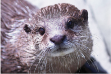

It’s hard knowing what to do when you’re about to foster. But, we make this process even easier when you foster with us, we have trained volunteers who will go over every possible question or concern you and your family might have on your newest family member.
Meet the Otters

Meet Micheal, the most beautiful boy in the world. He loves everything and everyone and he's got a sweet little face.
Meet Jessica, a strong willed otter who loves to play and slide and float on the water. She eats a lot.
Meet Spork, he runs in circles for days and he's a bit of a goof but he's lovable and a slippery boy. He's amazing at sports such as water polo , diving and hockey.
Meet Medusa, despite the name she will not turn you to stone. Instead she will turn you into a cooing pill of mush with her cute puppy eyes.
To foster any of they lovely otters follow the link below to apply to become a foster. We always need new fosters.